SeHal
Mobile App Redesign
New Feature Design
A platform that helps users find nearby halal food courts and restaurants, with a POS system for restaurant owners to manage operations and apply for halal certification.
Project Overview
SeHal was one of my early professional design projects, where I collaborated with a team to redesign an existing mobile application for Ngampooz. The initial scope focused on modernizing the application's visual appearance while retaining its existing page structures and information hierarchy. Working from a page-by-page redesign brief, I used the original application screenshots as visual references while recreating and refining the interfaces in Figma. Rather than restructuring the overall experience, my focus was on creating a cleaner, more contemporary visual presentation and improving selected component layouts.
After the initial redesign was completed, the project expanded to include a seller-side Point of Sale (POS) interface and a landing page. These additional deliverables introduced a different design context beyond the original application redesign. Throughout the project, I collaborated with the team and project manager through recurring online discussions and design reviews. The work concluded with a design handoff to the client, giving me early experience working within an established product structure and adapting to an evolving project scope.
Visual Redesign of the Existing App
Checking the earlier design to review the platform structures.
Renovate and modernize design structures and visual systems.
Maintain the consistency of interface components.
Develop High Fidelity prototypes and landing page.
The redesign began with a predefined brief containing screenshots of the existing application and a list of pages targeted for redesign. I used these materials as the primary reference throughout the process. My workflow involved keeping the original screenshots alongside my Figma workspace, allowing me to recreate the existing interfaces while updating their visual presentation. I retained the overall page structures and information hierarchy, focusing instead on cleaner layouts, more contemporary styling, and refinements to selected UI components.
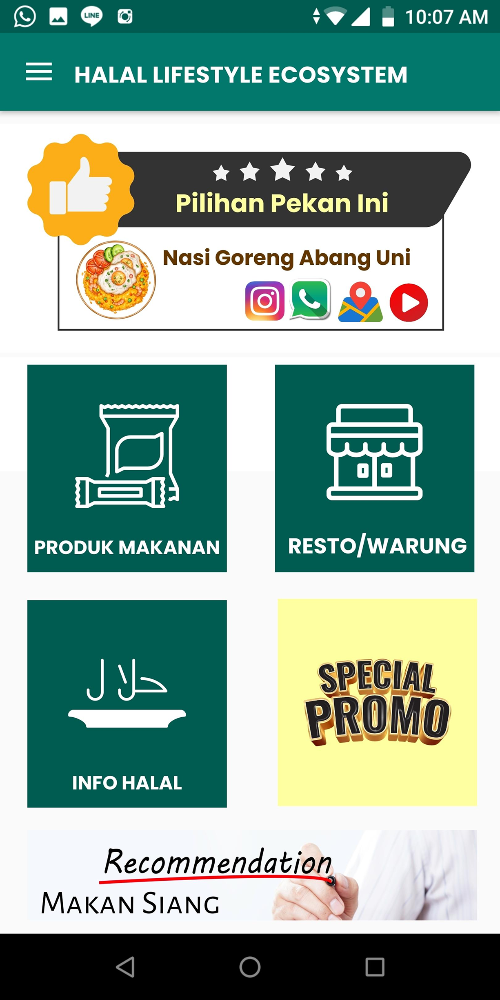
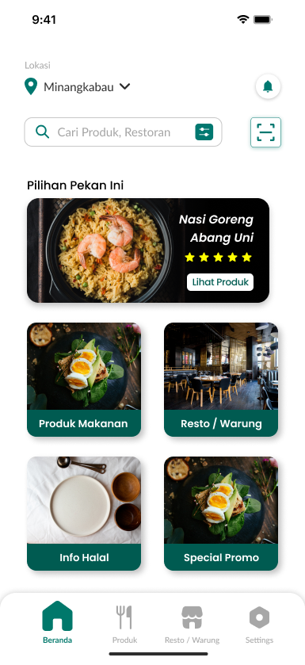
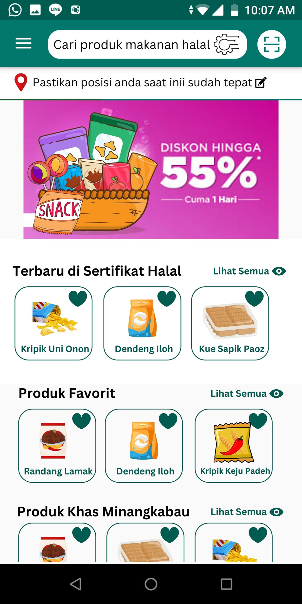
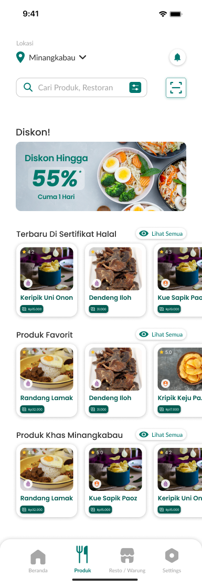
Some adjustments involved smaller layout details rather than major structural changes. For example, on the product and store detail pages, I refined the placement of elements such as the store name, halal logo, and halal certification code. This approach kept the redesign aligned with the supplied requirements while allowing me to modernize the interface without unnecessarily restructuring the existing screens.
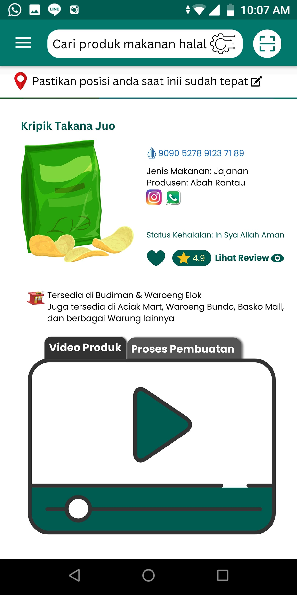
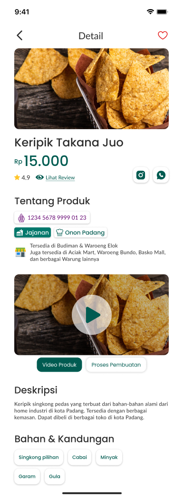
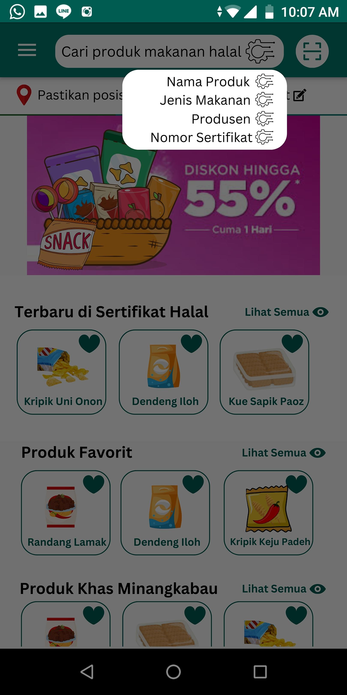
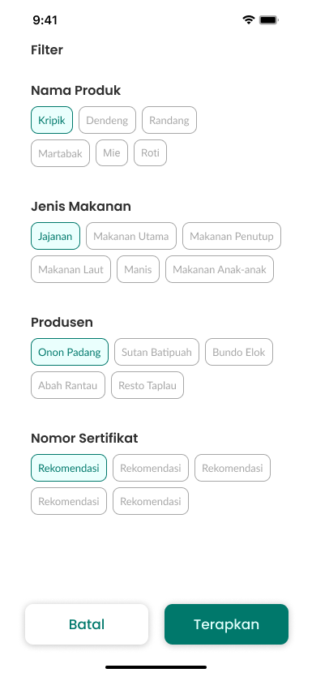
Expanding the Scope: Seller-side POS
Design an all-in-one POS (Point of Sale) feature to support seller-side transaction management and operational tracking.
Following the initial application redesign, the project scope expanded to include a Point of Sale (POS) interface for sellers. This introduced a second interface context alongside the existing buyer-facing application.
The POS design was guided by references provided by the project manager. I used these references as a starting point to develop the interface in Figma, translating the visual direction and available requirements into a separate seller-facing experience. Unlike the initial redesign, this task involved designing an additional interface rather than updating existing screens. My focus was on translating the provided references into a coherent set of POS screens within the project's scope.
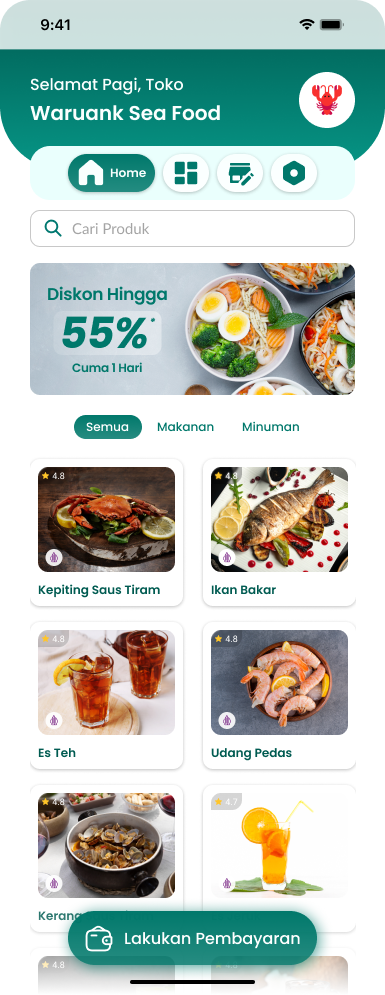
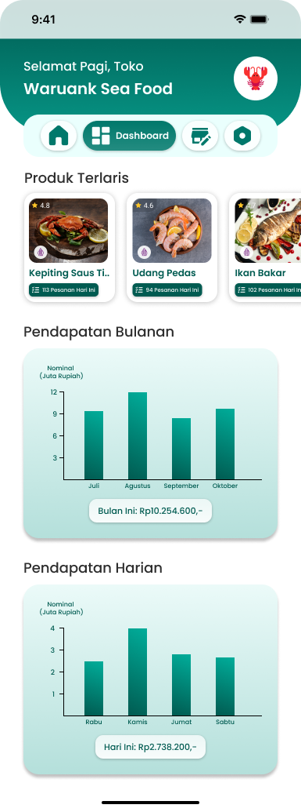
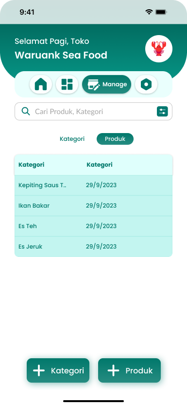
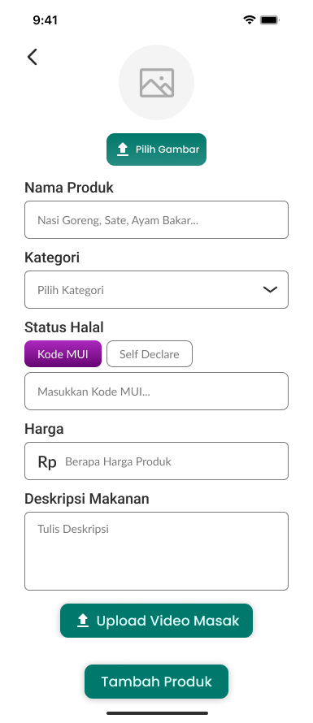
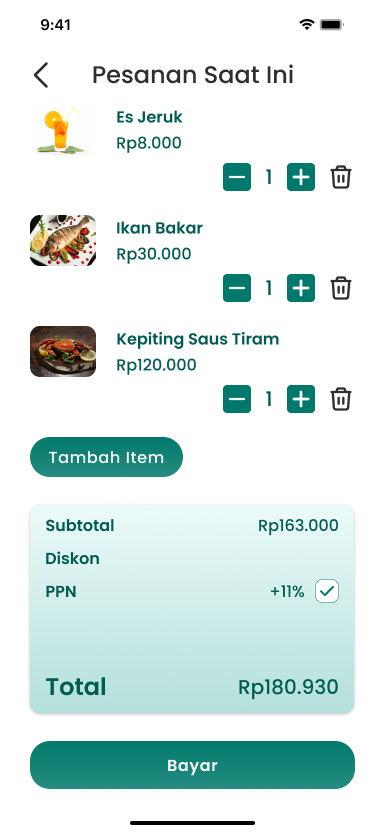
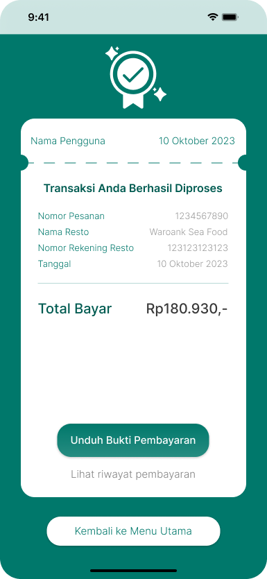
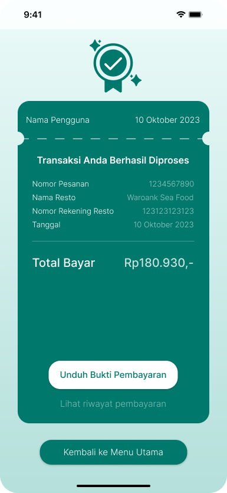
Collaboration and Design Reviews
Throughout the project, the team and project manager held recurring discussions through Google Meet and Discord. These sessions provided opportunities to discuss the project progress, review design work, and address feedback as the work progressed.
The reviews took place at different stages, beginning with broader project discussions and continuing with page-level design reviews when further input was needed. This collaborative workflow helped coordinate the design work with the project's evolving requirements.
Design Gallery
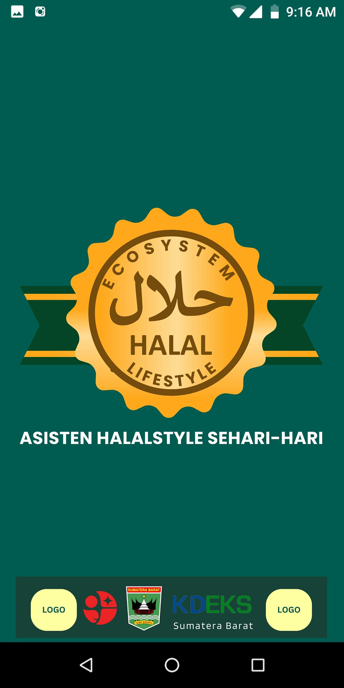
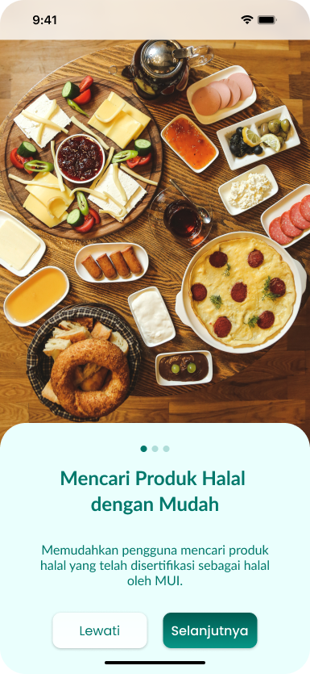
Reflection
Looking back, this project was primarily focused on visual modernization and translating predefined requirements into interface designs. My approach prioritized the existing application structure and the visual consistency of the redesigned screens.
With a stronger understanding of UX design today, I recognize that this approach left little room to examine the underlying user needs or validate whether the proposed interfaces supported real-world tasks effectively.
This experience helped me understand the distinction between improving an interface visually and evaluating the broader user experience. It also shaped how I approach design projects today: not only considering how an interface looks, but also questioning the needs, assumptions, and decisions behind it.
© 2026 Muhammad Azka Nur Azhim.